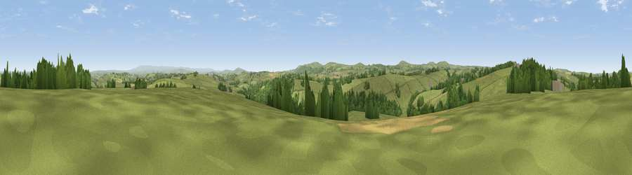

Viewpoint near Trewen
#19000 in England · top 31% of its area beats it · near TrewenThe view, rendered

A 360° render of this exact spot computed from the terrain model, tree cover and land cover — summer colours, afternoon light, calibrated against photographs of famous viewpoints. Real trees, hedges and buildings will differ in detail.
The panorama
Grey silhouette: terrain skyline in each direction (720 bearings, Earth curvature and refraction included). Dashed green: skyline with trees (+15 m) and buildings (+8 m) as obstacles. Blue strip: how far the ground is visible on each bearing.
Where the view opens
Wedge length = distance to the farthest visible ground on that bearing (vegetation-aware). Rings at 10, 25 and 50 km.
What fills the view
77% grassland · 18% woodland · 4% cropland ·
Angular shares of the visible panorama (visual magnitude), not map area. Landscape diversity 0.30 (0–1 Shannon).
Key numbers
More beautiful places nearby
The staircase of upgrades: each row has a higher view potential than everything closer. Driving times are estimates from straight-line distance, calibrated against real road routing — check an actual route before setting out.
| Place | Direction | Drive | Score |
|---|---|---|---|
| Viewpoint near Laneast | WNW · 2 km | ~5 min | 58.2 |
| Viewpoint near Laneast | WNW · 2 km | ~6 min | 59.6 |
| Viewpoint near Tregeare | N · 3 km | ~7 min | 59.9 |
| Fox Tor | SSW · 6 km | ~13 min | 62.5 |
| Viewpoint near North Hill | S · 6 km | ~13 min | 68.6 |
| Viewpoint near Five Lanes | SW · 7 km | ~15 min | 69.7 |
| Viewpoint near Warbstow | NW · 8 km | ~17 min | 71.2 |
| Viewpoint near Henwood | S · 9 km | ~18 min | 76.2 |
50.63011, -4.47259 · source: screening · position refined by local search. Computed location — check access rights before visiting.